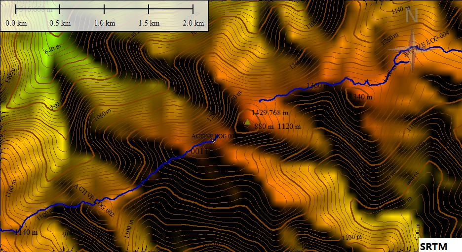
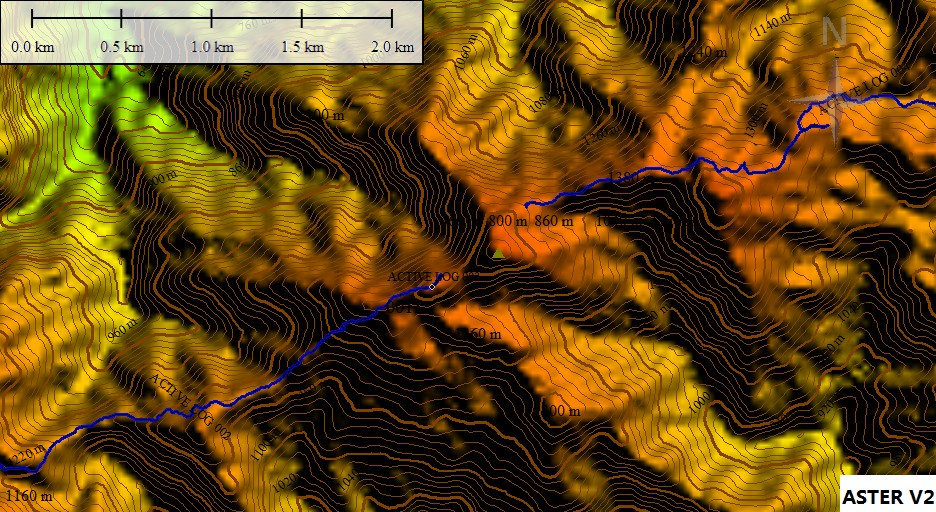
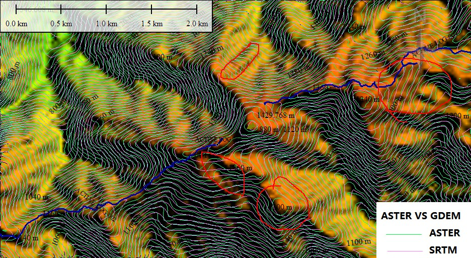

发信人: hemind(hemindaye), 信区: outdoor
标 题: 关于ASTER GDEM和SRTM高程数据
发信站: 饮水思源 (2012年05月19日02:04:43 星期六)
ZBG 你这个好事要做到底啊！
故我重开一贴，说说这个ASTER GDEM和SRTM高程数据。
SRTM:（Shuttle Radar Topography Mission航天飞机雷达地形测绘）,2000年“奋进”号
采集的雷达影像数据处理成的高程数据。现有90米和30米的两个精度。SRTM有V1，V2，V3
，V4版本，最新的好像是V4.1。
ASTER GDEM:先进星载热发射和反射辐射仪全球数字高程模型，NASA的新一代对地观测卫星
Terra，用热辐射采集的数据。ASTER GDEM有V1和V2两个版本，V2版本水平精度30米，高度
精度70米。（由此看来做地图时用20米等高距足够了！）
要说SRTM和ASTER GDEM的区别，从做过的几张图来看，ASTER GDEM的确能显示出SRTM不能
显示的地形，如一些小山头，等高线更加精确，看得出来，ASTER GDEM的等高线没有SRTM
的平滑。但是听论坛里说ASTER GDEM会有一些假地形。我用去年昱岭关丛林营地大岭塔，
分别用SRTM和ASTER GDEM作图，看看有什么区别。
 screen.width - 200){this.width = screen.width - 200}">
 screen.width - 200){this.width = screen.width - 200}">
 screen.width - 200){this.width = screen.width - 200}">
相信大家看出来一些端倪了
另外有论坛上关于这SRTM与ASTER GDEM的讨论，大家可以看看：
http://www.doyouhike.net/forum/comm_nav/552246,0,0,1.html
http://www.doyouhike.net/forum/comm_nav/841059,0,0,0.html
还有很多的，大家可以自己搜搜看。
关于下载：
ASTER下载：我去找了下，其实之前我给大家说的国内的国际科学数据服务平台网站里面就有下载,http://datamirror.csdb.cn/list.dem?type=gdem&opType=list
这个下载速度还可以，就是只有一个一个文件的下载。
这里面是ASTER GDEM V1版本,下面几个地址都是V2版本的。
后又在论坛里找到这个日本的服务器下载：
http://www.gdem.aster.ersdac.or.jp/search.jsp
美国的服务器下载：
http://gdex.cr.usgs.gov/gdex/
国外的这两个网站下载速度较慢，而且不能断点下载，还要注册，具体下载方式大家看看
就明白了
不过如果要想把全国的都下载下来的话这个帖子不错，有人把全国的数据分省和分纬度放
在115网盘上了，下载比较方便：
（失效）按省份下载：http://www.chinaera.org/bbs/viewthread.php?tid=26549&page=1&extra=#pid214185
（失效）按纬度下载：http://www.chinaera.org/bbs/viewthread.php?tid=27327&extra=page%3D1&page=1
（有效）skydrive下载（按纬度）：
https://skydrive.live.com/redir?resid=6951EF63E0606481!121
可以断点下载！！速度虽然慢了点，不过早上没人用电脑的时候速度还不错
SRTM的下载：上面第一个网站有。另外一个就是这里了http://srtm.csi.cgiar.org/SELECTION/inputCoord.asp
网盘什么的地址没找到，大家可以找找看，找到了共享一下。
另外我这几天没怎么用电脑，电脑闲着也是闲着，就用115网盘已经将ASTER GDEM V2中国
的全部下载下来了，总共24G多；我在想是不是也应该给协会弄个比较大的共享空间，速度
要快，大家的资料可以共享一下，协会的FTP是不是有点小？？
PS:一不小心搞到现在，明早还要骑车去东华。不对，应该是今早。。。。
为嘛图片不能显示啊，求解释！！
--
※ 来源:·饮水思源 bbs.sjtu.edu.cn·[FROM: 183.192.43.96]
※ 修改:·hemind 于 2012年05月19日02:08:13 修改本文·[FROM: 183.192.43.96]
※ 修改:·hemind 于 2012年05月19日02:09:08 修改本文·[FROM: 183.192.43.96]
※ 修改:·hemind 于 2012年05月19日02:11:48 修改本文·[FROM: 183.192.43.96]
※ 修改:·hemind 于 2012年05月19日20:09:20 修改本文·[FROM: 59.78.37.102]
※ 修改:·hemind 于 2013年07月23日09:48:25 修改本文·[FROM: 202.120.48.238]
|